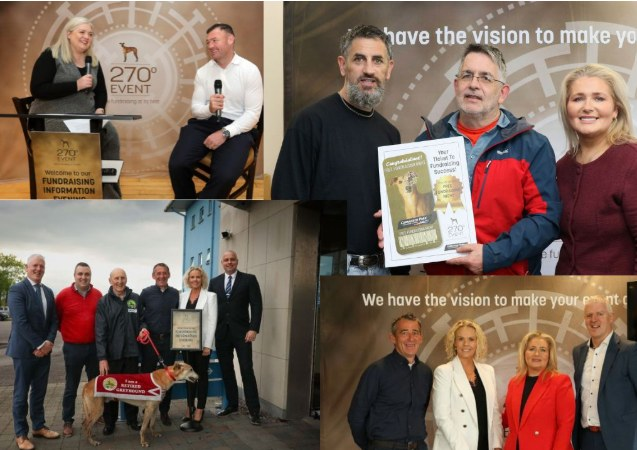

Sport & Sportswear
Sport & SportswearGreyhound Racing Ireland × 4 Athletes — 270 Degree Fundraising Events
Greyhound Racing Ireland used Sport Endorse to bring Davy Russell, Paul Galvin, David Kilcoyne and Erin King to six 270 Degree fundraising events at greyhound stadia across Ireland.

Overview
The campaign
Throughout May, Greyhound Racing Ireland partnered with Sport Endorse to support its "270 Degree" fundraising initiative, a community event concept inspired by the greyhound's 270-degree field of vision and the idea of helping clubs and charities "see the vision" for fundraising.
The campaign ran across six greyhound stadia in Ireland, from Shelbourne Park in Dublin to Curraheen Park in Cork. Guest appearances from Davy Russell, Paul Galvin, David Kilcoyne and Erin King added a sporting element to each live event, giving local clubs, charities and community groups a well-known name to meet at every venue.
The challenge
Greyhound Racing Ireland needed recognised athletes who could engage naturally with live audiences across multiple venues and dates. Each 270 Degree event was a live, in-person evening for clubs and charities, so the talent had to be comfortable speaking to a room, meeting guests and supporting the fundraising message on the night.
Running the series across six stadia also required consistent coordination of athlete availability, communication and logistics, so that every venue got the same quality of appearance without the GRI team managing several separate talent relationships.
The Sport Endorse solution
Sport Endorse sourced and coordinated four Irish sporting figures across the six events:
Davy Russell: Curraheen Park, Cork and Kilcohan Park, Waterford
Paul Galvin: Tralee and Galway
David Kilcoyne: Limerick
Erin King: Shelbourne Park, Dublin
Sport Endorse managed athlete sourcing, communication and coordination throughout the series, giving Greyhound Racing Ireland one central point of contact from the first booking to the final event.
Athlete fit
The campaign featured athletes from horse racing, Gaelic football and rugby, giving Greyhound Racing Ireland a broad mix of recognised sporting personalities suited to different audiences around the country.
Where possible, athletes were matched to venues with a local connection. Cork native and Grand National-winning jockey Davy Russell appeared in Cork and Waterford. All-Ireland-winning Kerry footballer Paul Galvin appeared in Tralee and Galway. Munster prop David Kilcoyne appeared in Limerick. Ireland rugby international Erin King headlined the Dublin event at Shelbourne Park.
Horse racing also ties naturally to a greyhound racing audience, while Gaelic football and rugby brought in the club and community networks the 270 Degree initiative set out to reach.
Deliverables
- Four athletes activated
- Six live appearances
- Six stadium locations
- Three sports represented
- Athlete sourcing, communication and coordination managed by Sport Endorse
Results
The campaign delivered six athlete appearances across six locations. It showed how sporting talent can add value to fundraising, community and live event experiences beyond traditional sponsorship campaigns.
Run a campaign like this
Tell us your goal — we'll show you the athletes, the process and the reporting on a short demo.
Book a Demo